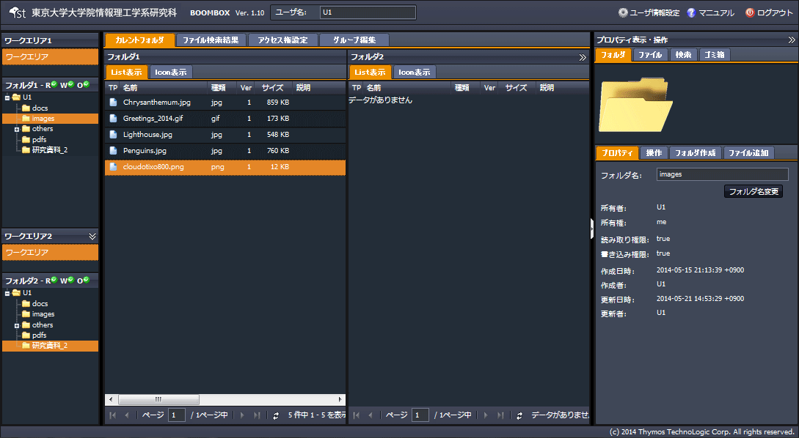
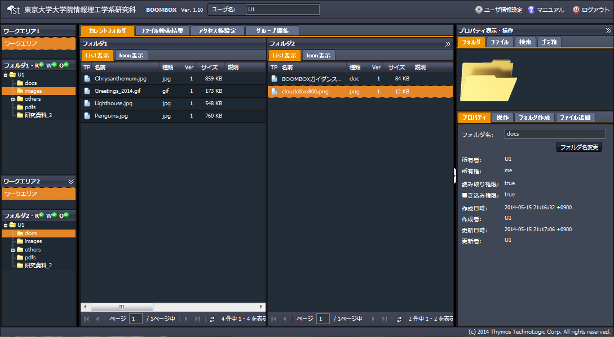
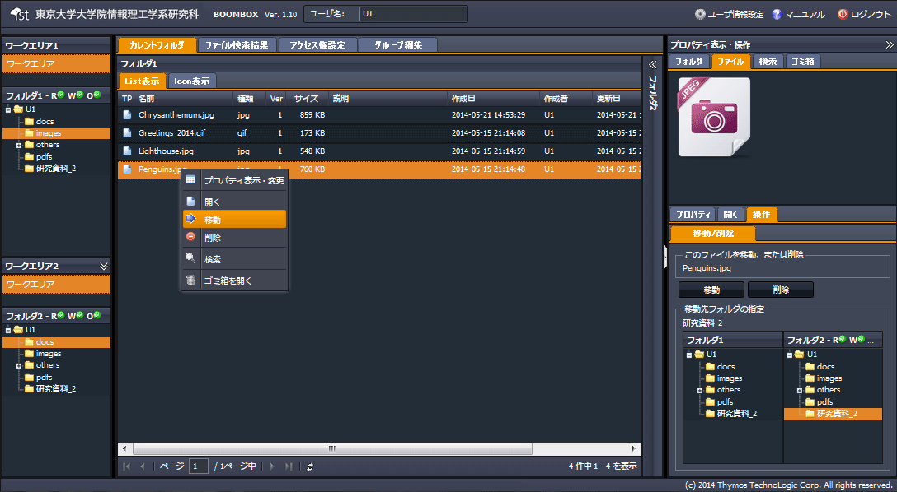
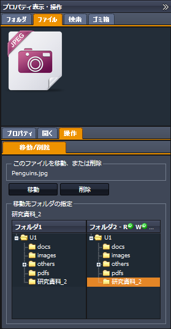
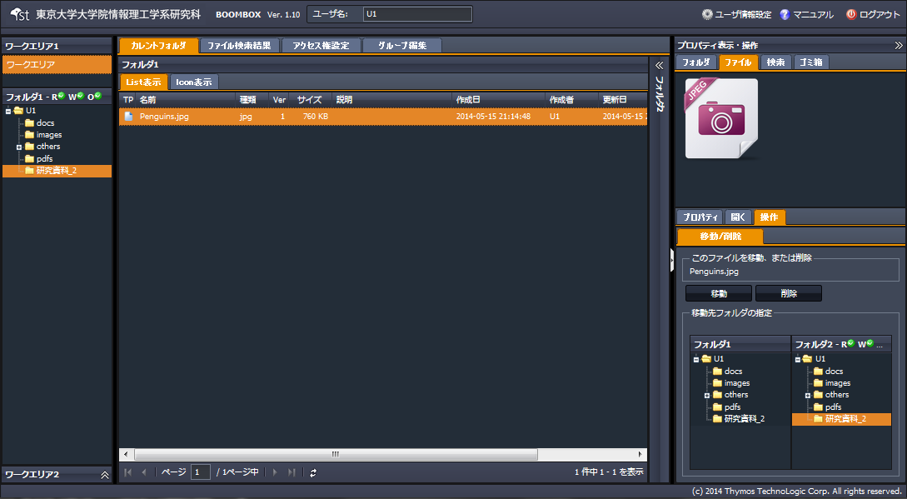

SecretFilesマニュアル
4.SecretFilesサービス(操作編)
4.2.8 ファイル、フォルダの移動
ファイル、フォルダをフォルダ間で移動させる手順を説明します。説明ではファイルを対象としていますが、フォルダの場合も手順は同様です。
ドラッグアンドドロップでの操作と、右ペインでの【操作タブ】の２通りの手順について説明致します。
１）ドラッグアンドドロップ
(1) ２つのフォルダを表示
左ペインのフォルダツリーと中央ペインのフォルダをそれぞれ２つ表示させます。

(2) ドラッグアンドドロップ
左ペインのフォルダツリーを操作し、移動元と移動先のフォルダを中央ペインに表示させ、対象をドラッグアンドドロップで移動させます。

２）右ペインの操作タブによる移動
(1) 対象ファイル（フォルダ）を選択し右クリックメニューを開く
『移動』をクリックします。

(2) 自動的に以下構成の右ペインが開く
右ペインにて、【ファイルタプ】＋【フォルダタプ】が開きます。
表示された対象ファイルの移動先フォルダを下部のフォルダツリーで指定し、『移動』をクリックします。

(3) ファイルは指定したフォルダに移動
『移動』をクリックすると、指定したファイルは元のフォルダから指定したフォルダに移動します。
